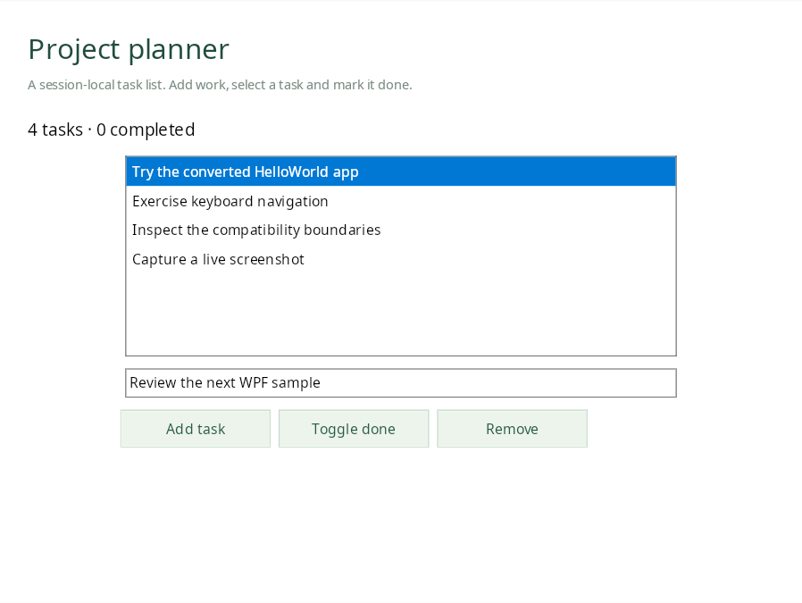
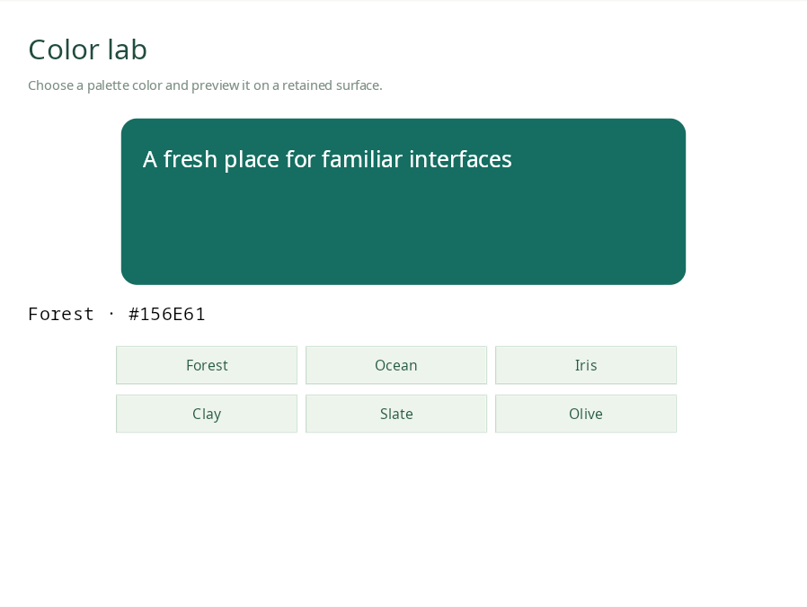
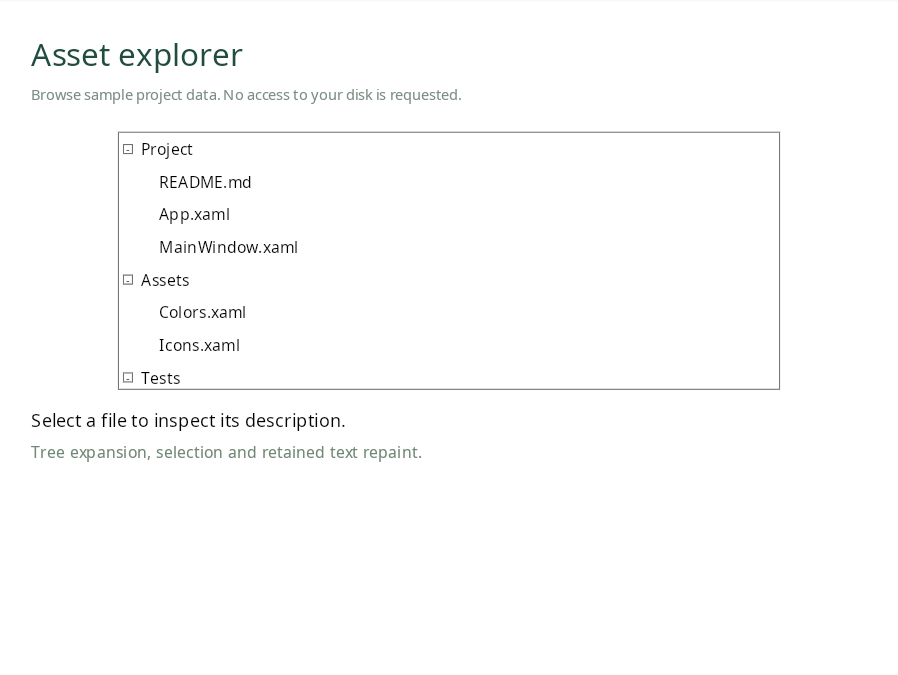
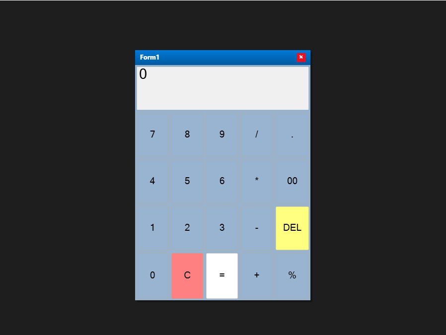
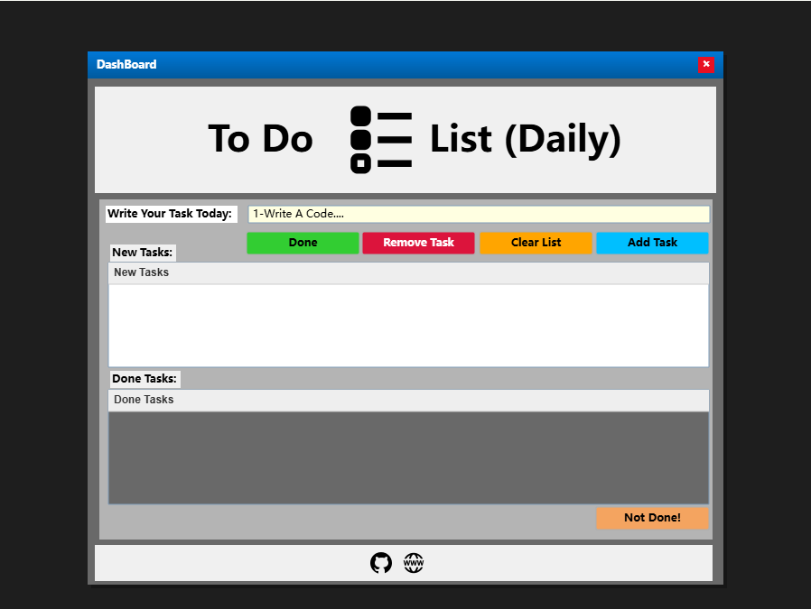
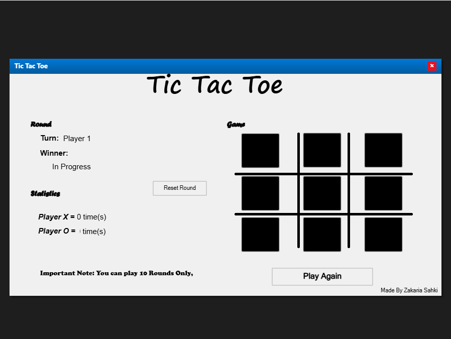
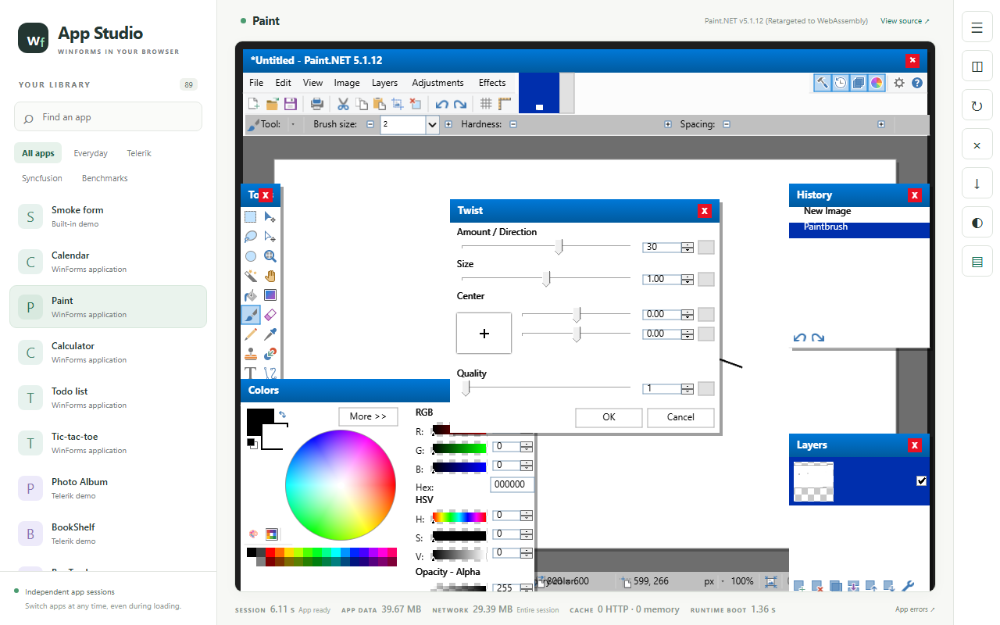
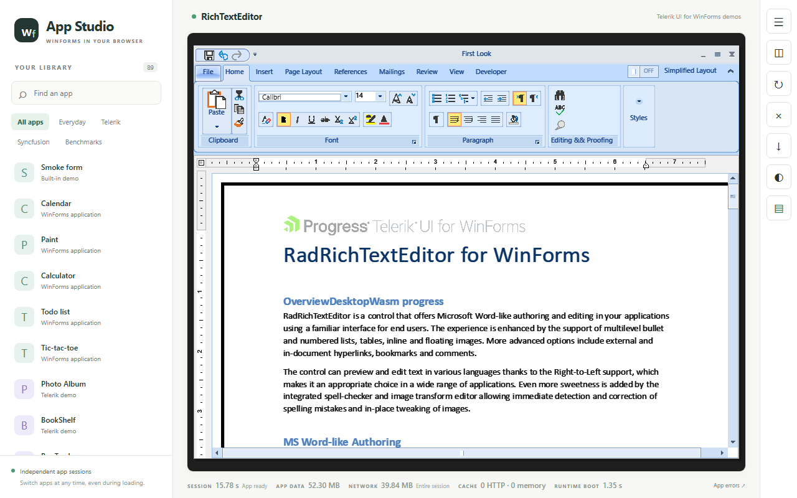
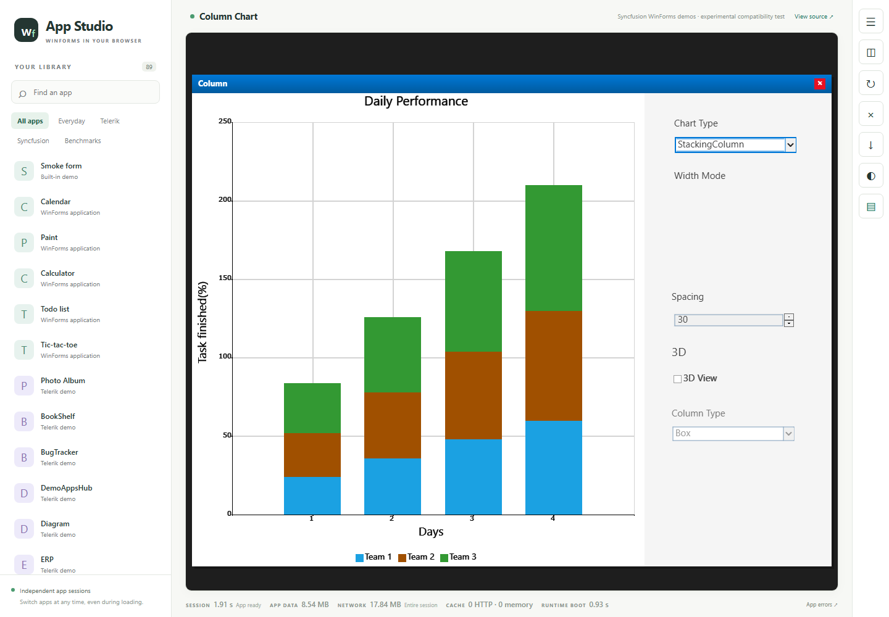
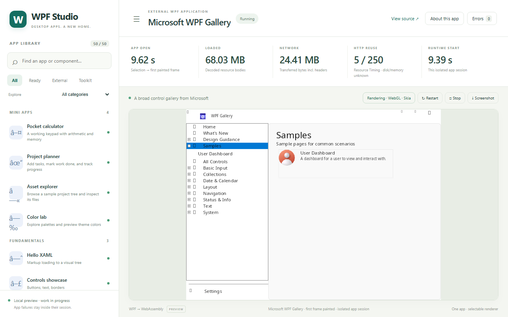

WPF · 01 / Arithmetic
Pocket calculator
A working keypad, decimal arithmetic and memory. Start with 7 + 8.
Run calculatorA .NET × WebAssembly experiment
Bring compiled .NET applications to your browser. DesktopWasm converts existing .exe and .dll files for its WinForms and WPF compatibility engines. It works with compiled applications even when their original source code is unavailable.
Runs in your browser · Open source · No installation
Small apps, hands on
Converted WinForms apps and WPF mini apps.
Pick an app and
make something happen.
WPF · 01 / Arithmetic
A working keypad, decimal arithmetic and memory. Start with 7 + 8.
Run calculator
WPF · 02 / Everyday work
Add a task, mark it done, remove it. A little list with real state.
Run planner
WPF · 03 / A splash of color
Pick a palette and watch the canvas repaint. Forest, ocean or iris?
Run color lab
WPF · 04 / Look around
Expand folders and inspect files in a sample project tree.
Run explorer
WinForms · Converted application
The existing Windows calculator, converted to run in your browser.
From albisnesstz/csharp-win-calculator
Run calculator
WinForms · Converted application
Explore the original daily task-list application and its Windows controls.
From kasra10/simple-csharp-todolist
Run To-do
WinForms · Converted application
Play the original game we converted, including its own board and interface.
From zakaria-sahki/tic-tac-toe-game
Play tic-tac-toeThe first app downloads a shared .NET runtime. Later launches can reuse the browser cache. Demo state lasts for the current app session.
More from the project
Screenshots from local compatibility builds.
Explore the larger
applications on your machine.

Drawing tools, menus and an effect settings dialog.
Local compatibility preview
A desktop document editor with text input.
Local compatibility preview
A chart type selection repaints the columns.
Local compatibility preview
Controls, tree navigation and sample pages.
Local compatibility previewBuild the DesktopWasm runtime from this repository, then supply the applications' compiled binaries and resources. Vendor demos may need separately obtained inputs. The repository documents setup and compatibility gaps.
Behind the windows
Conversion starts from the application's compiled .NET executables and assemblies, together with its dependencies and resources. DesktopWasm rewrites their managed intermediate language (IL) for a browser-hosted .NET compatibility runtime.
The pipeline is language-independent. It accepts managed .NET IL produced by C#, VB.NET, F# or any other .NET language. Current UI support focuses on WinForms and WPF. Application API usage, native dependencies and runtime coverage determine what executes successfully.
Explore the sourceThe app code runs in a browser-hosted .NET runtime. Pointer and keyboard input go through the selected desktop UI engine.
Compatibility varies by application. The repository tracks test results, supported behavior and open gaps.
Source, build reports and downloadable browser demos are available on GitHub.
Download the latest preview